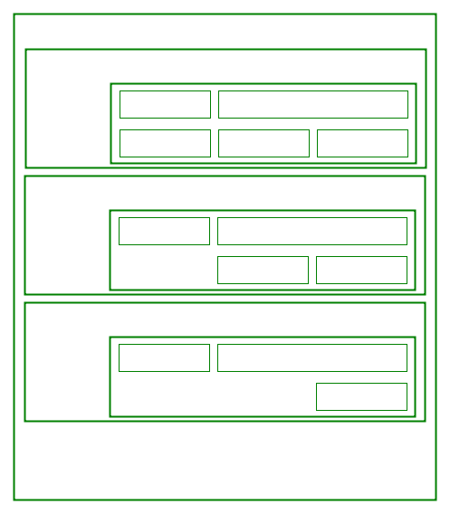
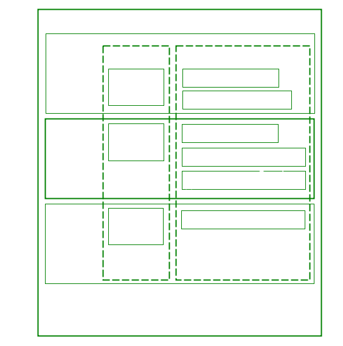
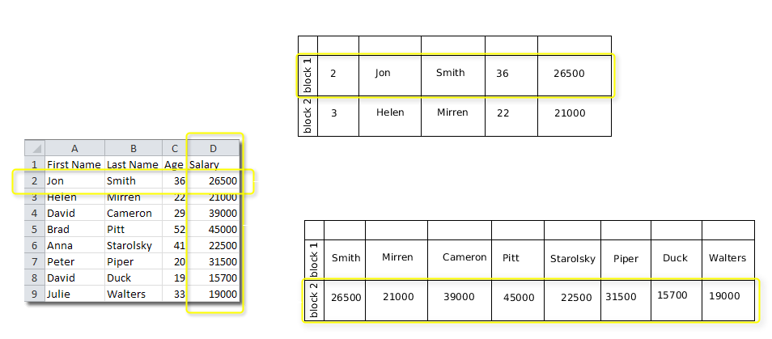
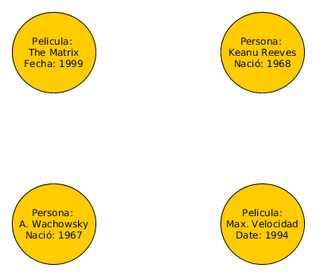
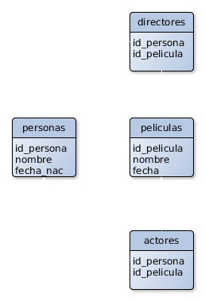

NoSQL
Diferentes Categorías
Diferentes Categorías
Existen 4 grandes categorías de Bases de Datos NoSQL
Ésta distinción es en base a como se persisten los datos físicamente
- Key-Value
- Column-Family
- Document
- Graph
¿Que vemos de cada una?
Estructura, Usos adecuados y Vendors
Key-Value Stores
- Las más simples y comunes. Column-family y Document estan basadas en esta.
- Amazon DynamoDB, una de las primeras. Usada actualmente por Amazon (propietaria).
Key-Value Stores

- Cada fila tiene una key, clave primaría única.
- Y el value es un objeto/estructura de cualquier tipo.
Key-Value Stores
Usos Adecuados
- Almacenar sesiones http, Carritos de Compras y Perfiles de Usuario: Cada sesión, perfil o carrito es identificado por una clave. Siempre se trabaja con ellos guardando todo y obteniendo todo a la vez vía la clave.
- Caching: Las soluciones de cache son muy utilizadas para escalar y también para mejorar la performance de cierta funcionalidad (Ej: type-ahead). Redis muy utilizado con este fin.
Column Family

- La imagen representa una tabla en una Wide Column Family Store.
- Las lineas punteadas de cada column family indican que todos sus datos de toda la tabla son almacenados juntos para mejorar el acceso a ellos.
Column Family

¿Qué forma de persistir facilita este tipo de queries? select sum(salary) from table
Column Family
- Columnar Database (VerticaDB)
- No confundir Wide Column Family con Columar DB. Existen Bases de Datos Relacionales que permiten el almacenamiento en columnas (VerticaDB). Wide Column Family, aprovecha esto pero no se destacan por resolver en forma performante las queries analíticas. Sino que sigue siendo el acceso vía key lo mejor que hacen (además de soportar miles de Terabytes sin problemas). Acceso directo: @joe/friends/zet
Column Family
Usos Adecuados
- Big Data / Hadoop
- Google's BigTable fue diseñado especialmente para almacenar grandes volúmenes de datos y procesarlos en forma distribuida.
¿Qué es un Documento?
{
"_id" : "586fdc38fad477126124ba1b",
"nombre": "José Garramuño",
"direccion" : {
"calle" : "Juramento 1653",
"ciudad" : "Capital Federal"
},
"telefono": ["123456", "7890123"],
"fecha_nacimiento": "1978-01-06",
"hijos" : [
{
"nombre" : "Javier",
"fecha_nacimiento": "2010-01-06",
},
{
"nombre" : "Josefina",
"fecha_nacimiento": "2013-01-06",
}
]
}
- El equivalente a un registro en una Base de Datos Relacional, es un documento en una Base de Datos basada en Documentos.
- Un documento es una estructura de datos compuesta por pares atributo:valor.
- Los documentos pueden contener otros documentos, arreglos y arreglos de documentos.
- En MongoDB un documento es un objeto JSON. Otras soportan XML.
Graph DataBases
- Categoría que NO fue diseñada para soportar demanda.
- Las bases de datos de tipo relacional, documentos, columnas, key-value, se centran en almacenar “cosas” representadas por diferentes estructuras: json, tablas, valores binarios.
- Pero a veces, la relaciones entre éstas "cosas" son las que nos importan, por sobre las "cosas".
- Facebook: ¿Quién es amigo de quién?
- Twitter: ¿Quién sigue a quién?
Graph DataBases
- Las BDs relacionales permiten modelar relaciones a través de claves forañas y joins. Pero no escalan con gran volumen de datos y SQL carece de poder expresivo para las consultas de éste tipo.
- Las BDs NoSQL vistas hasta ahora (Document, Column y Key-Value) hacen un peor trabajo que las relacionales en éste sentido.
- Por éste motivo surgieron las Graph DBs. Brillan cuando lo que importa es la relación!
Graph DataBases
¿Qué es una Graph DB?

- Una colección de Vértices (o nodos) y Relaciones entre vértices.
- Tanto vértices como las relaciones pueden poseer propiedades.
- Una query característica de estas estructuras sería encontrar todos los actores que trabajaron en las películas donde trabajó Keanu Reeves.
Graph DataBases
¿Y en relacional no es simple resolver esto?

Graph DataBases
¿Y en relacional no es simple resolver esto?
Query: Todos los actores que trabajaron en las películas donde trabajó Keanu Reeves
select p2.nombre, m1.nombre
from personas p1
join actores a1 on (p1.id_persona = a1.id_persona)
join peliculas m1 on (a1.id_pelicula = m1.id_pelicula)
join actores a2 on (a2.id_pelicula = m1.id_pelicula)
join personas p2 on (p2.id_persona = a1.id_persona)
where p1.nombre = 'Keanu Reeves'
¿Y los que trabajaron con los que trabajaron con Keanu? Tres Join mas...
Graph DataBases
¿Y en relacional no es simple resolver esto?
No podemos escribir una query con profundida arbitraria.
Problemas de performance: Suponiendo que hacemos las cosas bien y ponemos los indices correctamente en cada pk y fk, cada join debería recorrer el índice por cada actor y película, eso agrega overhead que se incrementa a medida que incrementamos la profundidad.
Graph DataBases
En una Graph DB, cada nodo conoce la ubicación física de los nodos a los que llega, no se necesitan índices.
Graph DataBases
Ok, todo lindo ! ¿y? ¿Cómo recorro el grafo?
//recupero todos los vértices
g.V()
//con nombre = ‘Keanu’
.has('nombre',eq('Keanu'))
//vértices a donde llega la relación actuó
.out('actuo')
//de los vértices anteriores, todos los vértices que llegan a éstos
.in('actuo')
//y de éstos vértices, dame el nombre
.values('nombre')
Graph DataBases
Vendors
- Neo4J
- Infinity Graph
- TinkerPop - Lenguaje Gremlin